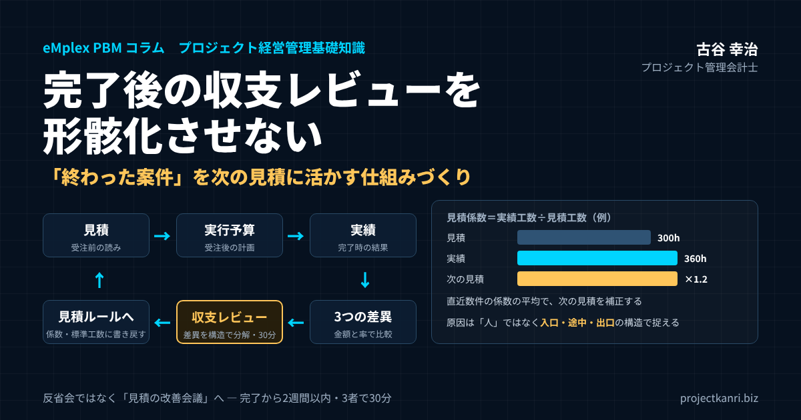

プロジェクト完了後の収支レビューを形骸化させない―「終わった案件」を次の見積に活かす仕組みづくり

結論、完了後の収支レビューは「最も安く手に入る学習機会」です
この記事の要点
- 位置づけ：完了後の収支レビューは「反省会」ではなく「見積の改善会議」
- 見る数字：見積と実行予算、実行予算と実績、想定粗利と最終粗利の3つの差異
- 分解：売上・労務費・外注費・経費、労務費は工数差異と単価差異に
- 原因：人ではなく構造で。入口（見積・契約）・途中（進捗・変更）・出口（検収・請求）
- 反映：見積書のひな形・標準工数表・チェックリストへ書き戻し、見積係数を育てる
- 運用：完了2週間以内、3者で30分。最後に「次の見積で変えること」を1つ以上
結論から申し上げます。プロジェクトが終わった後に収支を振り返る取り組みは、管理会計の中でも投じるコストが小さく、得られる学びが大きい施策です。理由は、その案件で使った工数も外注費も、すでに実績として手元に揃っているからです。新しいツールも追加の調査も要りません。あるのは、終わった案件のデータと、それを見る30分だけです。
それにもかかわらず、多くの会社では検収が済んだ瞬間に案件の数字は誰にも見られなくなり、同じ見積の誤りが次の案件でも繰り返されます。終わった案件は、次の利益を生むための教材だと捉え直すことが出発点です。検収後のわずかな時間の振り返りが、次の案件の採算を確実に押し上げる土台になります。
収支レビューが機能している会社には、共通点があります。それは、見積の精度が案件を重ねるごとに少しずつ上がっていくことです。最初は誤差が大きくても、レビューのたびに係数や標準工数が現実に近づき、やがて受注前の段階で赤字になりそうな案件に気づけるようになります。逆にレビューがない会社は、案件数が増えるほど同じ失敗の回数も増えていきます。経験を積んでいるはずが、学びは蓄積されていない状態です。
もう一つ申し上げておきたいのは、収支レビューは「反省会」ではなく「見積の改善会議」だということです。過去を裁くための場ではなく、次の案件の見積と運用を良くするための場です。この位置づけを最初に共有できるかどうかで、レビューが続くか、数回で形骸化するかが決まります。本稿では、私がCFOとして、また独立後に200社を超える企業を支援する中で磨いてきた、完了後の収支レビューを仕組みとして回す方法を、準備から定着まで順を追ってお伝えします。
なお、本稿でいう「見積」には、受注前に顧客へ提示する見積だけでなく、社内で案件の採算を判断するための見積も含みます。受注の可否や価格の判断を行うすべての場面で、過去の案件の実績が参照される状態をつくること。それが、収支レビューの最終的な目的です。
プロジェクト完了後の収支レビューとは：振り返り・ポストモーテムとの違い
最初に、言葉を整理しておきます。プロジェクトが終わった後に行う振り返りには、さまざまな呼び名があります。プロジェクトの振り返り、事後レビュー、ポストモーテム、レトロスペクティブ、完了報告会。呼び名によって、扱う範囲や目的が少しずつ違います。
| 呼び名 | 主な対象 | 主な目的 |
|---|---|---|
| プロジェクトの振り返り（事後レビュー） | 品質・進め方・体制など全般 | 次のプロジェクトの進め方の改善 |
| ポストモーテム | 障害・トラブル | 責任追及なしに原因を分析し再発を防ぐ |
| レトロスペクティブ | チームの進め方（短い周期） | チームの継続的な改善 |
| 収支レビュー（本稿） | 売上・工数・外注費・経費・粗利 | 見積と運用のルールを改善し採算を高める |
一般的なプロジェクトの振り返りは、品質や進め方、チームのコミュニケーションなど、幅広いテーマを扱います。システム開発でよく行われるポストモーテムは、障害やトラブルの原因を責任追及なしに分析することに重きを置きます。アジャイル開発のレトロスペクティブは、短い周期でチームの進め方を改善するための場です。
これに対して、本稿で扱う「収支レビュー」は、お金の観点に焦点を絞った振り返りです。見積でいくらと読み、実行予算でいくらと決め、最終的にいくらかかったのか。その差がなぜ生まれたのかを確かめ、次の見積と運用のルールに反映させる。対象は、売上、工数、外注費、経費、そして粗利です。
品質やチームの振り返りが大切でないわけではありません。ただ、それらと一緒に行うと、どうしてもお金の話が後回しになります。技術的な反省や人間関係の話に時間を取られ、最後の5分で「予算は少しオーバーしました」と報告して終わる。これでは、次の見積は何も変わりません。収支のレビューは、あえて独立させ、短時間で、数字を中心に行うことをお勧めします。
プロジェクト管理会計の言葉で言えば、収支レビューは、予算・実績・フォーキャストのサイクルの最後のピースです。着手前に予算を組み、進行中は実績を集めてフォーキャストを更新し、完了したら予算との差を検証して次の予算に活かす。この最後の検証がないと、サイクルは一周せず、毎回ゼロから予算を組み直すことになります。
なお、収支レビューは、プロジェクトが完了した後だけに行うものではありません。期間の長い案件では、主要な工程が終わった時点で中間のレビューを行うことも有効です。完了まで待っていては、学びを活かせるのが次の案件になってしまいますが、中間のレビューであれば、同じ案件の残りの工程に、すぐに学びを反映できます。
なぜ完了後のレビューは後回しにされるのか
私が200社を超える支援で見てきた限り、レビューが行われない理由はほぼ共通しています。第一に、次の案件がすでに動き出しており、現場に振り返る余裕がないこと。第二に、振り返りが「誰の責任だったか」を探す場になりやすく、関わった人が参加したがらないこと。第三に、目的が曖昧で、やってみても何も変わらなかった経験が積み重なっていることです。
つまり、時間の問題というより、進め方の設計の問題です。責任追及の場ではなく、次の見積を良くするための場だと位置づけるだけで、参加者の空気は大きく変わります。私自身、管理部門の立場で同じ壁に何度も直面してきました。「反省会」と呼ぶのをやめて「見積の改善会議」と呼び替えるだけでも、発言の量が変わることがあります。
もう一つ、見落とされがちな理由があります。案件別の収支を出すこと自体に、手間がかかる会社が多いという点です。工数は別のシステム、外注費は会計ソフト、請求は営業の管理表と、データが散らばっていると、レビューの準備だけで担当者が疲れてしまいます。準備が重ければ、レビューは自然と行われなくなります。ですから、案件別の数字を短時間で揃えられる状態をつくることが、実は最初の一歩になります。
加えて、私がよく目にするのは、レビューの結果が「誰にも使われない」という経験の積み重ねです。一度は頑張って振り返りを行い、立派な報告書を作った。しかし、その報告書は共有フォルダに保存されたまま、次の見積のときに誰も開かなかった。そうした経験が一度でもあると、現場は「どうせやっても変わらない」と感じ、次からは参加しなくなります。形骸化の正体は、時間がないことよりも、やっても変わらないという諦めであることが多いのです。
ですから、収支レビューを形骸化させないための設計は、三つの問いに答えることから始まります。準備を軽くできるか。責任追及ではなく改善の場にできるか。結果を、次の見積に確実に届けられるか。本稿の以降の章は、この三つの問いへの答えとして読んでいただければと思います。
| 形骸化の原因 | 設計で答えるべき問い | 本稿の該当章 |
|---|---|---|
| 次の案件で忙しい／集計が重い | 準備を軽くできるか | 準備を軽くする |
| 責任追及の場になる | 改善の場にできるか | 構造に分解する／場づくり |
| やっても何も変わらない | 結果を次の見積に届けられるか | 見積ルールへの反映／見積係数 |
準備を軽くする：案件別の収支を15分で揃える
レビューの準備で最も時間がかかるのは、案件別の数字を集めることです。ここを軽くできなければ、どれほど良い進め方を設計しても、レビューは続きません。
案件別の収支を揃えるために必要なデータは、大きく五つあります。見積の時点の数字、受注後に組んだ実行予算、工数の実績、外注費と経費の実績、そして請求した売上です。多くの会社では、これらが別々の場所に散らばっています。見積は営業の管理表、実行予算はプロジェクトマネージャーのエクセル、工数は勤怠やタイムシートのシステム、外注費と経費は会計ソフト、売上は請求の管理表。
| データ | 内容 | よくある置き場所 |
|---|---|---|
| 見積 | 受注前に提示した売上・工数・原価 | 営業の管理表・見積書 |
| 実行予算 | 受注後に組んだ売上・原価・粗利の予算 | PMのエクセル |
| 工数の実績 | 誰が何時間かけたか（コストレートで金額換算） | 勤怠・タイムシート |
| 外注費・経費の実績 | 発注・支払・経費精算 | 会計ソフト・購買の記録 |
| 売上 | 請求した金額・追加請求 | 請求の管理表 |
※すべてに同じプロジェクトコードが付いていれば、集計はコードで束ねるだけで済みます。
散らばったデータを揃えるうえで、最も大切なのは、すべてのデータに同じプロジェクトコードが付いていることです。工数の記録にも、外注の発注にも、経費の精算にも、請求にも、同じコードが付いていれば、集計はコードで束ねるだけで済みます。逆に、コードが付いていないデータがあると、担当者が記憶を頼りに案件へ振り分ける作業が発生し、準備に半日かかることになります。
もう一つのポイントは、工数を金額に換算するためのコストレートを決めておくことです。工数の実績が時間で記録されていても、それを原価として扱うには、一時間あたりの単価が必要です。職位や職種ごとのコストレートを決めておけば、工数の実績はそのまま労務費の原価として集計できます。コストレートがないと、収支レビューは外注費と経費だけの議論になり、プロジェクト型ビジネスで最も大きな原価である人の時間が、議論から抜け落ちてしまいます。
理想は、レビューのために特別な集計をしないことです。日頃から案件別の予算と実績を同じ物差しで管理していれば、完了した案件の数字は、すでにそこにあります。レビューの準備は、その画面を開いて、3つの差異を印刷するだけ。ここまで準備を軽くできれば、レビューは特別なイベントではなく、案件の締めくくりの当たり前の手続きになります。
準備の段階で、もう一つやっておきたいのが、案件の経緯の簡単な時系列です。いつ受注し、いつ仕様が確定し、いつどんな変更があり、いつ検収されたのか。数行の時系列があるだけで、差異がどの時点で生まれたのかを、参加者が同じ前提で議論できます。時系列は、プロジェクトマネージャーに5分で書いてもらう程度で十分です。
収支レビューで最初に見るべき3つの差異
数字で見るべき差異は、次の3つに絞ってください。1つ目は見積と実行予算の差、2つ目は実行予算と最終実績の差、3つ目は当初の想定粗利と最終粗利の差です。項目を増やしすぎると、レビューは細かい数字の確認作業になってしまいます。まずはこの3つが同じ資料に並び、誰が見ても同じ数字だと確認できる状態をつくってください。
見積と実行予算の差は、受注時点の読みの甘さを示します。実行予算と実績の差は、着手後の管理が崩れた場所を示します。両者を分けて見ることで、見積の問題なのか運用の問題なのか、対策の打ち先がはっきりします。この3つが並んでいれば、15分ほどで案件の要点はつかめます。ここでも、予算と実績が同じ物差しで管理されていることが前提になります。
実務で使いやすいのは、差異を金額と率の両方で書き出す方法です。金額だけでは案件規模の違いに引きずられ、率だけでは小さな案件の誤差が大きく見えてしまいます。両方を並べて、差異が大きい項目に印をつけていくと、話し合うべき論点が自然に3つほどに絞られます。すべての差異を説明しようとせず、影響の大きい上位の項目だけを深く掘ることが、30分で終える秘訣です。
差異が想定より小さかった案件も、見逃さずに確認してください。うまくいった案件は、見積の精度が高かったのか、たまたま追加要望が少なかったのかで、次への活かし方が変わります。偶然の黒字を実力だと思い込むと、次の案件で足元をすくわれます。
| 差異 | 示すもの | 主な対策の打ち先 |
|---|---|---|
| ① 見積 → 実行予算 | 受注時点の読みの甘さ・値引き | 見積ルール・受注判断 |
| ② 実行予算 → 最終実績 | 着手後の管理の崩れ | 進捗管理・変更管理・外注管理 |
| ③ 想定粗利 → 最終粗利 | 案件全体としての結果 | ①と②のどちらが主因かを特定 |
※差異は金額と率の両方で書き出し、影響の大きい上位の項目だけを深く掘ります。
3つの差異を見るときに注意したいのは、実行予算が途中で書き換えられていないかどうかです。案件の途中で実行予算を実績に合わせて修正してしまうと、実行予算と実績の差は小さく見えますが、それは管理がうまくいったからではなく、物差しを動かしたからにすぎません。途中で予算を見直すこと自体は必要な場合もありますが、その場合は、当初の実行予算と修正後の予算の両方を残し、レビューでは両方と比べるようにしてください。
差異を要素に分解する：工数差異・単価差異・外注費・経費
3つの差異で全体像をつかんだら、次は、差異を要素に分解します。粗利が想定より下がったとしても、その原因が売上の減少なのか、工数の増加なのか、外注費の増加なのかで、打つべき手はまったく違うからです。
まず、粗利の差異を、売上の差異と原価の差異に分けます。売上の差異は、契約金額の変更や、追加の請求があったかどうかで生まれます。原価の差異は、さらに労務費、外注費、経費に分けて見ます。プロジェクト型ビジネスでは、多くの場合、最も大きな差異は労務費、つまり人の時間から生まれます。
労務費の差異は、さらに二つに分解できます。一つは、かかった時間が予定より多かったか少なかったかによる差異で、これを工数差異と呼びます。もう一つは、一時間あたりの単価が予定と違ったことによる差異で、これを単価差異と呼びます。原価計算の言葉でいえば、数量差異と価格差異の考え方です。
| 項目 | 実行予算 | 実績 | 差異 |
|---|---|---|---|
| 単価（円／時間） | 5,000 | 6,000 | +1,000 |
| 工数（時間） | 400 | 450 | +50 |
| 労務費 | 2,000,000 | 2,700,000 | +700,000 |
| 工数差異 | （450－400）×5,000＝250,000 | ||
| 単価差異 | （6,000－5,000）×450＝450,000 |
※工数差異＋単価差異＝労務費の差異（70万円）。数値は説明のための例です。
たとえば、実行予算で、単価5,000円のメンバーが400時間働く計画だったとします。予算の労務費は200万円です。実際には、単価6,000円のメンバーが450時間働き、労務費は270万円になりました。差異は70万円の超過です。このうち、工数差異は、増えた50時間を予定の単価5,000円で評価した25万円。単価差異は、実際の450時間に単価の差1,000円を掛けた45万円。つまり、超過の多くは、時間ではなく、予定より単価の高いメンバーが担当したことから生まれていたことが分かります。
この分解をしないと、「工数がかかりすぎた」という一言で終わってしまいます。しかし、実際には、若手が担当する予定だった作業を、経験豊富なメンバーが引き受けていた。その背景には、若手の育成が間に合わなかったのか、難易度を見誤っていたのか、という別の論点があります。分解することで、議論すべき問いが、正しく立ち上がるのです。
外注費の差異も、同じように、発注した量と単価に分けて見ることができます。経費は金額が小さいことが多いですが、出張費や機材費など、案件によっては無視できない額になることがあります。すべてを細かく分解する必要はありません。差異の大きい要素から順に、一段だけ深く分解する。それで十分に、次の見積に活かせる学びが得られます。
売上の差異についても、一言触れておきます。売上が見積より下がった案件では、値引きがいつ、どのような理由で行われたのかを確認してください。受注を急ぐあまり、見積の段階で大きく値引きしていたのであれば、それは入口の問題です。途中で納期の遅れを理由に減額を求められたのであれば、途中の管理の問題です。逆に、追加の請求によって売上が増えている案件は、変更管理がうまく機能していた証拠でもあります。
差異の原因は「人」ではなく「構造」に分解する
差異が見つかったら次は原因を探しますが、ここで「担当者の見積が甘かった」と結論づけて止めてはいけません。個人の能力に原因を求めると、担当が替わっても同じ構造が残るからです。見るべきは、仕様変更の扱い、追加作業の請求ルール、外注先の管理、工数の記録方法といった、案件を取り巻く仕組みの側です。
原因を書き出すときは「なぜ」を繰り返し、人の名前が出てきたら一段深く掘り下げるのが目安です。「Aさんが確認を怠った」で止めずに、「確認が漏れても気づける仕組みがなかった」まで掘ると、対策が運用ルールとして書き出せます。個人を責めずに構造を直す姿勢が、正直な情報が集まる場をつくります。
構造に分解する際の視点として、私は「入口・途中・出口」の3つに分けて考えるようにしています。入口は見積と契約の段階、途中は着手後の進捗と変更の管理、出口は検収と請求の段階です。差異がどこで生まれたかをこの3つに当てはめると、見積の前提の甘さなのか、途中の管理の崩れなのか、請求漏れなのかが整理できます。担当者を責める議論になりにくく、対策も部署をまたいで考えられるようになります。
レビューの場では、事実と解釈を分けて書き出すことも大切です。「工数が想定より増えた」は事実で、「顧客が無理を言った」は解釈です。事実を先に揃えてから解釈を話すと、議論が感情論に流れにくくなり、対策の質も上がります。
| 段階 | よくある原因 | 対策の例 |
|---|---|---|
| 入口（見積・契約） | 前提の甘さ、範囲の曖昧さ、値引き | 見積係数・リスク加算・契約範囲の明文化 |
| 途中（進捗・変更） | 追加要望の無償吸収、外注範囲の拡大、担当の変更 | 変更管理ルール・発注範囲の文書合意 |
| 出口（検収・請求） | 検収の遅れ、追加分の請求漏れ | 検収・請求のチェックリスト |
原因を書き出したら、それぞれに「次の案件で同じことが起きる可能性はどのくらいあるか」を一言添えておくと、対策の優先順位が付けやすくなります。その案件に固有の特殊な事情で、二度と起きそうにないものは、記録だけ残して深追いしません。逆に、どの案件でも起こり得る原因は、たとえ今回の影響額が小さくても、ルールとして手当てしておく価値があります。
具体例1：追加要望が無償で吸収されていた案件
一つ例を挙げます。あるシステム開発の案件で、最終的な粗利が想定を大きく下回ったとします。レビューで工数を見ると、仕様確定後の追加要望に対応した工数が、着実に積み上がっていました。担当者は顧客との関係を優先し、追加分を請求せずに吸収していたのです。プロジェクトの現場では、決して珍しい光景ではありません。
このとき「担当者が断れなかった」で終わらせると、次の案件でも同じことが起きます。構造として見れば、追加要望を受けた時点で工数と金額を見積り直すルールがなく、判断が個人任せになっていたことが原因です。対策は、追加要望の受付から見積の再提示までの流れを決めた、変更管理のルールを整えることです。これは営業と現場の双方が使える運用ルールになります。
この例で大切なのは、結論が「追加請求を徹底しよう」という精神論で終わっていないことです。ルールとして残すからこそ、担当が替わっても、新しく入ったメンバーがいても、同じ判断が再現されます。レビューの成果とは、反省の言葉ではなく、次の案件から使える手順や基準として形に残るものです。会議の最後に「今日の学びを、どのルールに書き足すか」を必ず一言で確認する習慣をお勧めします。
この案件のレビューで、もう一つ確認したことがあります。追加要望に対応した工数が、タイムシートの上で、通常の作業と区別して記録されていたかどうかです。区別されていなければ、どれだけの工数が追加要望に使われたのかを、後から特定することができません。この会社では、レビューを機に、追加要望への対応はタイムシートで別の作業区分に記録するルールも加えました。次の案件からは、追加要望の工数が数字で見えるようになり、顧客との追加請求の交渉にも、その数字を根拠として使えるようになりました。
具体例2：外注費が膨らんだ案件と、うまくいった案件
もう一つ、別の形の例を挙げます。あるコンサルティング会社で、同じ種類のプロジェクトを二件、ほぼ同じ時期に実施したとします。一件は想定どおりの粗利を確保し、もう一件は想定を大きく下回りました。
粗利が下がった案件の差異を分解すると、労務費はほぼ予定どおりで、外注費が予算を大きく超えていました。さらに確認すると、専門的な分析作業を外部の専門家に依頼する際、発注の範囲が曖昧なまま着手しており、途中で範囲が広がって追加の発注が重なっていたことが分かりました。入口・途中・出口でいえば、途中の管理、具体的には外注先の発注範囲の管理が崩れていたことになります。
一方、粗利を確保できた案件では、同じ専門家に依頼する際、最初に成果物と作業範囲を文書で合意し、範囲外の依頼が出たときは、その都度、追加の見積を取ってから判断していました。担当していたプロジェクトマネージャーが、以前の案件で同じ失敗を経験していたため、自然とそうしていたのです。
この二件を並べてレビューすることで、うまくいった案件の進め方を、組織の手順として取り出すことができます。外注を使う案件では、着手前に発注の範囲を文書で合意し、範囲外の依頼は追加の見積を経てから判断する。個人の経験として埋もれていた知恵が、全社のルールになります。赤字の案件だけを振り返っていては、この学びは得られません。黒字の案件にこそ、再現すべき進め方が隠れているのです。
振り返りの結果を次の見積ルールに反映させる
レビューの価値は、結果が次の見積に返って初めて生まれます。実務では、見つかった学びを、見積の係数や標準工数、リスク加算のルールに書き戻す作業まで含めて運用を設計します。たとえば、要件が固まっていない段階の案件には一定の予備工数を加える、外注比率が高い案件は管理工数を別枠で見る、といった形です。
ルールは大げさにせず、A4一枚に収まる程度で構いません。ルールを更新した日付と根拠になった案件名も残しておくと、後から見直す際の判断材料になります。営業と現場が同じ見積ルールを使えるようになると、受注時点の採算予測が安定していきます。見積が安定すれば、着地見込みの精度も上がり、経営会議での議論も変わってきます。
反映先を決めるときは、営業の見積書のひな形、標準工数表、案件開始時のチェックリストの3つを候補にしてください。この3つは日常的に使われるため、学びが確実に現場へ届きます。逆に、共有フォルダに保管された振り返り資料は、ほとんど読まれることがありません。学びは、人が意識して思い出すものではなく、仕事の流れの中で自然に目に入る場所に置くものだと考えています。
ルールを増やしすぎないことも重要です。新しい学びを一つ足すなら、古くなったルールを一つ見直す。この新陳代謝があると、ルールが現場で使われ続けます。守られないルールが増えるほど、レビューそのものへの信頼が下がってしまいます。
| 反映先 | 反映する内容の例 | 使う人 |
|---|---|---|
| 見積書のひな形 | 予備工数・管理工数の別枠、変更管理の条件 | 営業・PM |
| 標準工数表・見積係数 | 案件種類別の係数、工程別の標準工数 | 営業・PM |
| 案件開始時のチェックリスト | 外注範囲の合意、コードの付与、検収条件 | PM・管理部門 |
※共有フォルダの振り返り資料は読まれません。仕事の流れの中で目に入る場所に置きます。
反映の作業は、レビューの場で終わらせず、担当者と期限を決めて確実に行います。たとえば、「見積書のひな形に、要件未確定の場合の予備工数の欄を追加する。担当は営業部の〇〇さん、期限は来月末」というように、誰が、何を、いつまでに変えるのかを、具体的に書き出してください。抽象的な「気をつけよう」は、一か月後には誰も覚えていません。
見積係数と標準工数を、実績で育てる
見積ルールへの反映の中でも、最も効果が大きいのが、見積係数と標準工数の更新です。ここでは、その具体的なやり方をお伝えします。
見積係数とは、見積の工数に対して、実際にどれだけの工数がかかったかの比率です。計算は簡単で、実績の工数を見積の工数で割るだけです。たとえば、見積で300時間と読んだ案件に、実際には360時間かかったなら、係数は1.2です。この係数を、案件の種類ごとに記録していきます。
| 案件 | 見積工数 | 実績工数 | 係数 |
|---|---|---|---|
| 案件A | 300時間 | 360時間 | 1.20 |
| 案件B | 500時間 | 575時間 | 1.15 |
| 案件C | 200時間 | 260時間 | 1.30 |
| 案件D | 400時間 | 460時間 | 1.15 |
| 直近4件の平均 | 約1.20 |
※数値は説明のための例です。案件の種類ごとに記録し、直近数件の平均を補正の目安にします。
一件だけの係数には、偶然の要素が多く含まれます。ですから、同じ種類の案件の係数を、直近の数件で平均して使います。表の例でいえば、新規の開発案件の係数は、直近の4件で1.15から1.30の間に収まっており、平均は約1.2です。次に同じ種類の案件を見積もるときには、担当者が積み上げた工数に、この1.2を掛けたものを目安にする。そうすれば、これまで繰り返してきた見積の甘さを、構造的に補正できます。
係数が1.0を大きく上回り続ける種類の案件は、見積の積み上げ方そのものに問題がある可能性があります。逆に、係数が1.0を下回り続けるなら、見積が保守的すぎて、受注の機会を逃しているかもしれません。係数は、見積を補正する道具であると同時に、見積の癖を映す鏡でもあるのです。
標準工数は、さらに一歩進んだ使い方です。要件定義、設計、開発、テスト、移行といった工程ごとに、同じ種類の案件の実績工数を集めておくと、工程ごとの標準的な工数の目安ができてきます。新しい案件の見積では、担当者の積み上げと、この標準工数を突き合わせ、大きく外れている工程があれば、その理由を確認する。見積の妥当性を、個人の経験だけでなく、組織の実績で確かめられるようになります。
大切なのは、係数も標準工数も、一度決めたら終わりではないということです。レビューのたびに新しい実績が加わり、目安は少しずつ現実に近づいていきます。完了後の収支レビューは、この見積の目安を育てるための、定期的な水やりのようなものだと考えています。
見積の前提条件とリスク加算を、レビューで鍛える
見積係数が「平均的にどれだけずれるか」を補正する道具だとすれば、リスク加算は「この案件は特にずれやすい」という個別の事情を見積に織り込む道具です。収支レビューは、このリスク加算のルールを鍛える場でもあります。
レビューを重ねていくと、差異が大きくなりやすい案件には、いくつかの共通する特徴があることに気づきます。要件が固まっていない段階で受注した案件、初めて取引する顧客の案件、社内に経験者の少ない技術を使う案件、外注の比率が高い案件、短い納期を約束した案件。こうした特徴を持つ案件では、差異が出やすいことが、実績から分かってきます。
そうであれば、見積の段階で、これらの特徴に当てはまるかどうかを確認し、当てはまる場合には一定の予備工数や予備費を加えるルールにします。たとえば、要件が未確定なら工数に一定割合を加える、初めての顧客なら管理工数を別枠で見る、といった形です。加算の割合は、最初は経験に基づく仮の数字で構いません。レビューのたびに実績と照らし合わせ、少しずつ現実に合わせていきます。
もう一つ大切なのが、見積の前提条件を見積書に明記することです。どこまでが見積の範囲で、どこからが追加になるのか。顧客の側でいつまでに何を用意してもらうのか。前提条件が書かれていれば、途中で範囲が広がったときに、追加の見積を提示する根拠になります。レビューで「範囲の曖昧さ」が原因として繰り返し出てくる会社は、まず見積書の前提条件の欄を充実させることから始めてください。
収支レビューシートのひな形
レビューを毎回同じ形で行うために、一枚のレビューシートを用意しておくことをお勧めします。毎回同じ項目を同じ順番で埋めていくことで、準備の手間が減り、案件同士の比較もしやすくなります。
| 欄 | 書く内容 |
|---|---|
| ① 基本情報 | プロジェクトコード・案件名・顧客・種類・期間・PM |
| ② 3つの差異 | 見積／実行予算／実績の売上・原価・粗利・粗利率（金額と率） |
| ③ 要素別の分解 | 差異の大きい要素（労務費は工数差異・単価差異） |
| ④ 原因（事実と解釈を分ける） | 入口・途中・出口に分けて書き出す |
| ⑤ うまくいった点 | 再現すべき進め方 |
| ⑥ 次の見積で変えること | 反映先・内容・担当者・期限（1つ以上必須） |
| ⑦ 前回決めた変更の確認 | 前回のレビューで決めた変更が反映されたか |
シートは、A4一枚に収まる量にしてください。項目が増えるほど、埋めること自体が目的になり、肝心の議論の時間が減ります。特に重要なのは、最後の「次の見積で変えること」の欄です。ここが空欄のまま終わったレビューは、記録にはなっても、改善にはつながりません。
シートは、案件の種類や会社の規模に合わせて調整して構いません。ただし、3つの差異、原因の入口・途中・出口の整理、反映先と担当者・期限の三つは、どの会社でも外さないでください。この三つが揃っていれば、レビューは最低限の役割を果たします。
続けるための最小ルール―頻度・参加者・所要時間
定着させるコツは、最初から完璧を目指さないことです。お勧めは、完了から2週間以内に、プロジェクトマネージャー、営業担当、経理または管理部門の3者で、30分だけ行うという最小構成です。対象も全案件ではなく、規模の大きい案件と、想定粗利を大きく外れた案件に絞ります。
ただし、案件別の収支がすぐ出せる状態になっていることが条件です。集計に半日かかるようでは続きません。プロジェクトごとの予算・実績・見通しを日常的に管理する仕組みの有無が、継続性を左右します。最初の3か月は、回数よりも、必ず実施して記録を残すことを優先してください。ここで習慣がつけば、対象案件を広げるのは難しくありません。
参加者の選び方にも工夫が必要です。プロジェクトマネージャーだけで行うと現場の視点に偏り、管理部門だけで行うと数字の説明に終始します。営業担当が入ることで、見積時の前提や顧客とのやり取りの背景が共有され、管理部門が入ることで、数字の見方が揃います。立場の違う3者が同じ資料を見て話すこと自体が、部門間の認識のずれを埋める機会にもなります。
30分の進め方の目安をお伝えします。最初の5分で3つの差異を確認し、次の15分で原因を入口・途中・出口に分けて洗い出します。続く7分で見積や運用ルールへの反映案を決め、最後の3分で担当者と期限を確認して終わります。時間を区切ることで、議論が愚痴や反省に流れるのを防げます。
| 時間 | 内容 |
|---|---|
| 0〜5分 | 目的の確認と、3つの差異の確認 |
| 5〜20分 | 原因を入口・途中・出口に分けて洗い出す（事実→解釈の順） |
| 20〜27分 | 見積・運用ルールへの反映案を決める |
| 27〜30分 | 担当者と期限を確認して終了 |
最小構成で始めたレビューが定着してきたら、少しずつ範囲を広げていきます。対象案件を中規模の案件まで広げる、四半期に一度は複数の案件をまとめて横断で振り返る、年に一度は見積係数と標準工数の全体を見直す。最初から大きな仕組みを作ろうとせず、小さく始めて、続いたものだけを育てていく。これが、仕組みを形骸化させない一番の近道です。
責任追及にしないための場づくり
収支レビューが形骸化するもう一つの大きな理由は、場の空気です。赤字の案件のレビューは、どうしても担当者が責められているような雰囲気になりがちです。担当者は自己弁護に回り、本当の原因を話さなくなります。そうなると、レビューで得られる情報は、当たり障りのないものばかりになります。
これを防ぐために、私は三つのことをお勧めしています。一つ目は、レビューの冒頭で、目的を毎回言葉にすることです。「今日は誰かの責任を問う場ではなく、次の見積を良くするための場です」。当たり前のことでも、口に出すことで場の空気が変わります。
二つ目は、進行役を、その案件の担当者以外の人にすることです。管理部門の担当者や、別のプロジェクトのマネージャーが進行役を務めると、議論が中立に保たれやすくなります。担当者は、説明する側ではなく、一緒に構造を考える側として参加できます。
三つ目は、経営者や上位の管理職が、レビューの場で個人を責めないことです。経営者が「なぜこんなに赤字になったのか」と担当者を問い詰めれば、その瞬間に、次からのレビューは報告会に変わります。経営者がすべきことは、構造の問題として浮かび上がった課題に対して、仕組みを変えるための判断と資源を提供することです。
私自身、CFOとして多くの案件のレビューに参加してきましたが、最も多くの学びが得られたのは、担当者が自分の判断の迷いや失敗を、安心して話せた場でした。正直な情報が集まる場をつくることは、レビューの質を決める、最も重要な条件だと考えています。
誰がレビューを回すのか：管理部門とPMOの役割
仕組みとしてのレビューを続けるには、誰がそれを回すのかを決めておく必要があります。プロジェクトマネージャーに任せると、次の案件の忙しさに押されて後回しになりがちです。私がお勧めするのは、管理部門、あるいはPMO（プロジェクトマネジメントオフィス）が、レビューの事務局を担う形です。
事務局の役割は、主に四つあります。完了した案件を把握し、レビューの対象かどうかを判断すること。3つの差異を記入したレビューシートを準備すること。レビューの日程を調整し、進行役を務めること。そして、決まった変更が見積のひな形や標準工数表に反映されたかを確認し、次回のレビューの冒頭で報告することです。
この役割を担う人には、数字が読めることに加えて、現場との信頼関係が求められます。案件が終わるたびに、プロジェクトマネージャーや営業担当に声をかけ、数字を揃え、場を設ける。地味な仕事ですが、この役割を担う人がいるかどうかで、レビューが続くかどうかが決まります。以前のコラムで、プロジェクト管理会計を支えるキーパーソンとして「スーパーアドミニストレーター」をご紹介しましたが、完了後の収支レビューの事務局は、まさにその人が力を発揮する仕事の一つです。
現場でよく見る失敗パターン
支援先で繰り返し見てきた失敗は、大きく3つあります。1つ目は、レビューを経営会議の場で行い、報告会になってしまうこと。2つ目は、赤字案件だけを取り上げ、うまくいった案件の要因を残さないこと。3つ目は、学びを議事録に書いたまま、見積ルールに反映しないことです。
特に2つ目は見落とされがちで、黒字案件の中にこそ、再現すべき進め方が隠れています。良かった点と悪かった点を同じ重みで記録し、次の案件で使える形に残していくことが、レビューを組織の資産に変えるコツです。どのパターンも、目的を「次の見積を良くすること」に絞れば避けられます。
失敗を防ぐ簡単な方法は、レビューの最後に「次の見積で変えること」を必ず1つ以上書き出して終わることです。1つでも構いません。変えることが書かれていれば、その会議は記録のためではなく、行動のためのものになります。そして次回のレビューの冒頭で、前回決めた変更が実際の見積に反映されたかを最初に確認します。この小さな往復が、レビューを形骸化させない最も確実な仕組みです。
| 失敗パターン | 起きること | 対策 |
|---|---|---|
| 経営会議の場で行う | 報告会になり、本音が出ない | 3者で30分の別の場を設ける |
| 赤字案件だけを扱う | 再現すべき進め方が残らない | 黒字案件も同じ重みで記録 |
| 議事録で終わる | 次の見積が変わらない | 「次の見積で変えること」を必須に |
| 前回の結果を確かめない | 決めたことが反映されない | 冒頭で前回の変更の反映を確認 |
もう一つ付け加えるなら、レビューを人事評価と直結させないことも大切です。レビューの結果がそのまま担当者の評価に反映されると、担当者は不利な事実を隠そうとします。評価には、レビューに誠実に参加し、学びを共有したことを、むしろ前向きに反映させる。そうした運用にすることで、レビューは安心して本音を話せる場になります。
一件のレビューから、案件横断の分析へ
一件ずつのレビューが積み上がってくると、次の段階に進むことができます。複数の案件のレビュー結果を横に並べて、傾向を分析することです。
たとえば、案件の種類ごとに、見積粗利と実績粗利の差を並べてみます。新規開発の案件は毎回粗利が下がるが、保守運用の案件はほぼ予定どおり、という傾向が見えるかもしれません。顧客ごとに並べれば、特定の顧客の案件で追加要望の吸収が繰り返されていることが分かるかもしれません。プロジェクトマネージャーごとに並べれば、見積の精度の違いや、得意な案件の種類が見えてきます。
こうした横断の分析は、経営の判断に直結します。粗利が安定しない種類の案件は、見積の方法を見直すか、価格を上げるか、受注の方針そのものを考え直す必要があります。追加要望が多い顧客には、契約の段階で変更管理のルールを合意しておく必要があります。一件ずつのレビューでは見えなかった構造的な課題が、案件を重ねることで浮かび上がってくるのです。
横断の分析で注意したいのは、プロジェクトマネージャーごとの比較を、個人の評価のためだけに使わないことです。見積の精度に差があるなら、精度の高い人の進め方を全員で共有する機会にする。比較は、責めるためではなく、学び合うために使う。この姿勢が保たれていれば、横断の分析は、組織全体の見積力を底上げする強力な道具になります。
横断の分析を行うためには、一件ずつのレビューシートの項目を揃えておくことが前提になります。案件の種類、顧客、プロジェクトマネージャー、3つの差異、原因の区分。これらが同じ形式で記録されていれば、数十件のレビューが溜まったところで、表計算ソフトでも十分に傾向を読み取ることができます。
業種別の着眼点：IT・コンサル・建設・映像制作
収支レビューの基本的な進め方は業種を問いませんが、差異が生まれやすい場所は、業種によって異なります。自社の業種で特に見るべき点を押さえておくと、レビューの焦点が定まります。
| 業種 | 差異が生まれやすい場所 | 特に確認したいこと |
|---|---|---|
| システム開発・ITサービス | 仕様確定後の追加要望、テスト工程の膨らみ | 工数差異と単価差異、追加要望の工数の区分 |
| コンサルティング | 提案・準備段階の工数、範囲の拡大 | 受注前の工数の扱い、成果物の範囲 |
| 建設 | 資材費・外注費の単価と数量、設計変更 | 追加工事が契約変更として回収できたか |
| 映像制作・広告 | やり直し、出演者・機材の手配変更 | 修正の回数・範囲の契約上の取り決め |
システム開発やITサービスでは、労務費が原価の中心であり、工数差異と単価差異の分解が特に役立ちます。仕様確定後の追加要望と、テスト工程の膨らみが、差異の典型的な発生源です。コンサルティングでは、提案や準備の段階でかかった工数が、案件の原価に正しく計上されているかが論点になりやすく、受注前の工数をどこまで案件に含めるかのルールを決めておくことが大切です。
建設業では、資材費や外注費の比重が大きく、実行予算と実績の差は、発注の単価と数量の両面から見る必要があります。設計変更に伴う追加の工事が、契約金額の変更として回収できたかどうかも、重要な確認点です。映像制作や広告では、撮影や編集のやり直し、出演者や機材の手配の変更が差異の原因になりやすく、修正の回数や範囲を契約でどう決めていたかがレビューの焦点になります。
いずれの業種でも共通しているのは、差異の多くが、契約の範囲と、途中の変更の扱いから生まれているということです。業種ごとの着眼点を押さえつつ、入口・途中・出口の整理を当てはめれば、自社に合ったレビューの型ができあがります。
形骸化していないかを測る：収支レビューの定着KPI
レビューの仕組みが本当に機能しているかどうかは、数字で確かめることができます。私がお勧めしている指標は、次の四つです。
| 指標 | 計算方法 | 目安・見方 |
|---|---|---|
| レビュー実施率 | 実施した案件数÷対象案件数 | まずは対象案件の全件実施 |
| 2週間以内実施率 | 完了後2週間以内に実施した割合 | 記憶が新しいうちに行えているか |
| 変更の反映率 | 見積に反映された変更÷決めた変更 | 決めたことが実行されているか |
| 見積粗利率と実績粗利率の乖離 | 案件種類別の平均の乖離の推移 | 時間とともに縮小していれば機能している |
中でも最も重要なのは、見積粗利率と実績粗利率の乖離の推移です。レビューの仕組みが機能していれば、この乖離は、時間とともに小さくなっていくはずです。半年、一年と続けても乖離が縮まらないなら、レビューで決めたことが、実際の見積に反映されていない可能性があります。前回決めた変更が反映されたかを確認する手順が、形だけになっていないかを見直してください。
指標は、毎月の経営会議で一行だけ報告する程度で構いません。レビューの実施率と、見積粗利と実績粗利の乖離。この二つが毎月報告されるだけで、レビューは経営が関心を持っている取り組みとして、組織の中に位置づけられます。
指標を導入するときは、最初から高い目標を掲げないことも大切です。レビューの実施率は、最初の数か月は半分程度でも構いません。大切なのは、指標が毎月報告され、少しずつ上がっていくことです。数字が見えるようになるだけで、現場の意識は確実に変わっていきます。
eMplex PBMで、レビューを日常の延長にする
ここまでお伝えしてきたように、収支レビューを続けるための最大の条件は、案件別の予算と実績が、日頃から同じ物差しで見えていることです。完了したときに特別な集計が必要な状態では、レビューは必ず後回しになります。
eMplex PBMでは、業種別のテンプレートから予算の科目を選んでプロジェクトごとに予算を登録し、売上・労務費・外注費・直接経費を実績として記録していきます。進捗率と粗利率は日々の実績とともに把握でき、案件のドリルダウンで、どの科目で差が生まれているかを確かめられます。タイムシートで記録した工数は労務費の原価に反映されるため、プロジェクト型ビジネスで最も大きな原価である人の時間を、収支の議論から落とさずに済みます。
進行中は、フォーキャストのレポートで着地見込みを月次で更新し、粗利率のアラートで早めに異変に気づく。完了したら、予算・実績・着地見込みの推移をそのまま並べて、3つの差異を確認する。事業別・プロジェクト別の収支レポートを使えば、案件の種類ごとの傾向も、経営会議の資料として短時間で揃えられます。完了後の収支レビューが、特別なイベントではなく、日々の管理の延長として自然に行える状態。それが、私たちがeMplex PBMで目指している姿です。
明日から始める3つのステップ
最後に、明日から始められる最初の一歩を、3つのステップでお伝えします。
第一のステップは、直近に完了した大きな案件を一つ選び、見積・実行予算・実績の3つの数字を並べてみることです。完璧な集計でなくて構いません。手元にある数字で、3つの差異を書き出してみてください。数字を揃えるのにどれだけ時間がかかったか、それ自体が、自社の準備の重さを測る指標になります。
第二のステップは、その案件のプロジェクトマネージャー、営業担当、管理部門の3人で、30分の時間を取ることです。本稿の進め方とレビューシートを使い、原因を入口・途中・出口に分けて話し合い、最後に「次の見積で変えること」を一つだけ決めてください。
第三のステップは、一か月後に、その一つの変更が実際の見積に反映されたかを確認することです。反映されていれば、レビューの往復が一回、回ったことになります。この一回を経験すると、レビューが「やっても変わらない会議」ではないことを、参加者全員が実感できます。そこから、対象の案件を少しずつ広げていけばよいのです。
まとめ
完了後の収支レビューは、追加投資が小さく、効果が積み上がる管理会計の取り組みです。見積・実行予算・実績の3つの差異に絞り、原因は個人ではなく構造に分解し、結果を次の見積ルールに書き戻す。この流れを、30分の最小構成から始めてみてください。
最後に、プロジェクト型ビジネスの経営者や管理部門の皆様へ。案件を終えるたびに数字を見返す習慣は、派手さはありませんが、会社の採算力をじわじわと底上げしていきます。まずは直近に終わった大きな案件を一つ選び、見積と実績の差だけでも眺めてみてください。そこにある差異が、次の見積を良くするための最初のヒントになります。
エンプレックス(現SCSK)でCFOを務めていた頃から、案件ごとの予算と実績が同じ画面で見えることが、振り返りの質を決めると実感してきました。eMplex PBMは、そうした案件単位の収支を日常的に追える状態をつくるための仕組みとして設計しています。終わった案件を、次の利益の種に変えていきましょう。
形骸化しないレビューの条件を、もう一度整理しておきます。準備が軽いこと、責任追及ではなく改善の場であること、結果が次の見積に確実に届くこと、そしてその往復が数字で確かめられていること。この四つが揃えば、終わった案件は、確実に次の利益の種になります。
よくある質問（FAQ）
Q. プロジェクト完了後の収支レビューでは、何を見ればよいですか？
A. まずは「見積と実行予算の差」「実行予算と最終実績の差」「当初の想定粗利と最終粗利の差」の3つに絞ります。差異が大きい項目だけを、売上・労務費・外注費・経費、さらに工数差異と単価差異に一段ずつ分解して原因を探ります。
Q. 収支レビューはいつ、誰が、どのくらいの時間で行うべきですか？
A. 完了から2週間以内に、プロジェクトマネージャー・営業担当・経理または管理部門の3者で、30分を目安に行います。最初は全案件ではなく、規模の大きい案件と、想定粗利を大きく外れた案件に絞ると続けやすくなります。
Q. 振り返りが責任追及の場になってしまいます。どうすればよいですか？
A. 冒頭で「次の見積を良くするための場」と目的を言葉にし、進行役を担当者以外が務めます。原因に人の名前が出たら一段深く掘り、仕組みの問題として書き出します。経営者が個人を責めないことも大切です。
Q. レビューの結果を次の見積に活かすには、どうすればよいですか？
A. 学びを、見積書のひな形、標準工数表、案件開始時のチェックリストに書き戻します。案件の種類ごとに「実績工数÷見積工数」の見積係数を記録し、直近数件の平均を次の見積の補正に使う方法が効果的です。
Q. 収支レビューが形骸化していないかは、どう確かめればよいですか？
A. 対象案件のレビュー実施率、2週間以内の実施率、レビューで決めた変更の反映率、見積粗利率と実績粗利率の乖離の推移を見ます。仕組みが機能していれば、乖離は時間とともに小さくなっていきます。